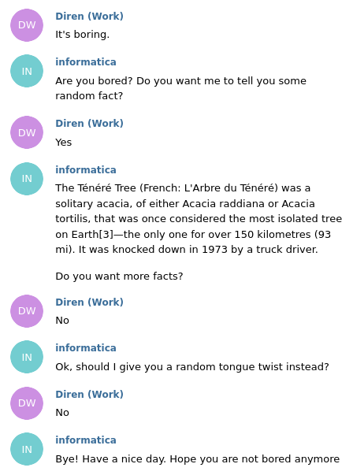

8 Telegram
8.1 Security
A message can be send as plain text, or it can be encrypted in some way. If a message is encrypted on all its way from the sender to the recipient, this is called end-to-end encryption. If a message is encrypted on its way from the sender to a server, decripted, re-encrypted, and then transferred to the recipient, this is called encryption-in-transit or server-client-encryption. Telegram supports both encryption types. If you want to use end-to-end encryption, you have to go for secret chats. If you are interested in the details of Telegram’s symmetric end-to-end encryption you can read this: https://core.telegram.org/api/end-to-end The default encryption scheme of telegram is server-client-encryption. This means, that messages cannot be read, e.g. by somebody having power over a wifi-router, but they could theoretically be read by telegram on the server side. However, Telegram states that it saves keys on servers at different locations, so that it is not possible for a single engineer to read any messages. Server-client-encryption allows for a cloud based system. In this way, you can read your messages on multiple devices, you do not need to worry about backups and everything run quite fast.
Telegram uses a custom encryption scheme called MTProto. It has often been criticised for its custom design, as there has not been any formal proof that it is reliable and secure. However, in December 2020 a paper has been published giving some formal verification. Telegram offers up to 300 000 dollar for somebody finding some security issue. Every now and then, programmer or scientist discover some vulnerabilities, e.g. described in this article:https://mybroadband.co.za/news/security/406466-big-problems-with-telegram-security.html
Most of Telegrams source code is open source, except the code running on Telegram’s server.
Telegram can be a platform for illegal activities such as illegal pornography or stolen personal data, and it also has been used for communication by far-right-groups.
It can also be a tool for political activism in dictatorial countries and has been blocked by several governments.
8.2 Security tipps
- You can set an auto-delete timer for messages
- in some client apps, you can set a passphrase to avoid other people reading your messages when they got access to your device
- there is an option to hide your phone number: https://www.howtogeek.com/713715/how-to-hide-your-phone-number-in-telegram/
8.3 Creating a telegram bot

python-telegram-bot
Bots are like normal Telegram accounts, but they are operated by programs.
To create a new bot, you need to search for the botfather. I always found it strange, that the botfather is called botfather. Apparently, this because of the movie Godfather, a 1972 American crime film…
Howevere, search for the botfather and click on start:

chatting with the botfather

name your new bot
Then use the /newbot command. You can either press on the button with the “/”, or just type the command directly into the chat. Follow the instructions of the botfather. You will need to choose a name and a username for your bot. In the end, the botfather will send you an access token. Copy this token.
Open the file bot.py
You will need to insert your token here, in the Updater function:
Insert your token
e.g.
updater = Updater('12414235252:gshgskghskjhwiuhfhskjfshvbjfhi')Run the script bot.py using
python3 bot.pyTheoretically, your bot is online now! Search for your bot in telegram using its name or follow the link supplied by the botfather:
Follow the link
You can try the commands /hi or /time.
But… Per default, all bots are public. I assume you do not want to have a public bot (yet). So we limit it to certain chats. You need to manually add a chat-id before somebody can use your bot.
So, type /hi. Your bot should not greet you back.
But in the terminal window you use to run your bot, you should be able to see the chat-id of your private chat with the bot.
Find the ID
Copy this id and insert it in bot.py:
 You can delete 123 and insert your chat-id instead, you can also insert multiple chat-ids, seperated by comma.
You can delete 123 and insert your chat-id instead, you can also insert multiple chat-ids, seperated by comma.
Re-run the script bot.py
Now you can try to chat with the bot again using the commands /hi or /time. This time you should get an answer.
8.4 Adding a command
def greet(update, context):
# send a greeting
if check_id(context, update):
update.message.reply_text("Hi! I'm the Informatica Feminale Bot.")A function that implements a command needs the update object (“update”) and the context (“bot”). We are using “check_id” to make our bot private, only answering in chats with certain chat-ids. “Reply_text” is one of many predefined functions from the telegram package. It will send the text in the chat.
If you want that the user sees the command’s name and description when starting to type or using the “/”-button, you have to add it by chatting with the botfather:

add command
8.5 Reading and responding to messages
The bot can read and respond even to all “normal” messages sent in the chat. The message can be obtained using “update.message.text”:
def echo(update, context):
"""Echo the user message."""
update.message.reply_text(update.message.text)In order to make the bot read the messages, you need to add a MessageHandler. You can filter the messages. In this case we are reading and responding to normal text-messages, but not to commands.
# on non command i.e message - echo the message on Telegram
dp.add_handler(MessageHandler(Filters.text & ~Filters.command, echo))
Echo
8.6 Using the job queue
Your bot can perform a certain action and send a message after a certain amount of time, if you want repeatedly.
You can use the following functions: run_daily / run_monthly, run_once and run_repeating.
8.6.1 job queue example
Let us look at an example first. Imagine you want to set a timer, e.g. to allow the user to time 10 seconds.

Timer
def alarm_10(job_context):
job_context.bot.send_message(chat_id=job_context.job.context,
text='Drrrrrrring!!! 10 seconds passed.')
def set_alarm_10(update, context):
chat_id = update.message.chat_id
job = context.job_queue
job.run_once(alarm_10, 10, context=chat_id, name=str(chat_id))We have a function “set_alarm_10” which is basically like the other functions we add to the handler. The user can use a command to run this function. It shedules the job to induce an other function “alarm_10”, which is the actual alarm, after 10 seconds.
Within this function we first obtain the chat_id of the chat where the command was used.
chat_id = update.message.chat_idWe then obtain our job queue:
job = context.job_queueAnd then we use run_once: alarm_10 is the name of the function we want to call. 10 means, we want to call it after 10 seconds. We also pass the chat_id as context, and its name.
job.run_once(alarm_10, 10, context=chat_id, name=str(chat_id))The message to be called has the job-queue as a parameter. Using this we can send a message:
def alarm_10(job_context):
job_context.bot.send_message(chat_id=job_context.job.context,
text='Drrrrrrring!!! 10 seconds passed.')8.6.2 job queue functions
(copied from https://python-telegram-bot.readthedocs.io/en/stable/telegram.ext.jobqueue.html)
run_daily(callback, time, days=(0, 1, 2, 3, 4, 5, 6), context=None, name=None, job_kwargs=None)Creates a new Job that runs on a daily basis and adds it to the queue.
callback: The callback function that should be executed by the new job. Callback signature for context based API: def callback(CallbackContext)
time (datetime.time) – Time of day at which the job should run. If the timezone (time.tzinfo) is None, the default timezone of the bot will be used.
days (Tuple[int], optional) – Defines on which days of the week the job should run (where 0-6 correspond to monday - sunday). Defaults to EVERY_DAY
context (object, optional) – Additional data needed for the callback function. Can be accessed through job.context in the callback. Defaults to None.
name (str, optional) – The name of the new job. Defaults to callback.__name__.
job_kwargs (dict, optional) – Arbitrary keyword arguments to pass to the scheduler.add_job().
run_monthly(callback, when, day, context=None, name=None, day_is_strict=True, job_kwargs=None)Creates a new Job that runs on a monthly basis and adds it to the queue.
callback (callable) – The callback function that should be executed by the new job. Callback signature for context based API: def callback(CallbackContext)
when (datetime.time) – Time of day at which the job should run. If the timezone (when.tzinfo) is None, the default timezone of the bot will be used.
day (int) – Defines the day of the month whereby the job would run. It should be within the range of 1 and 31, inclusive.
context (object, optional) – Additional data needed for the callback function. Can be accessed through job.context in the callback. Defaults to None.
name (str, optional) – The name of the new job. Defaults to callback.__name__.
day_is_strict (bool, optional) – If False and day > month.days, will pick the last day in the month. Defaults to True.
job_kwargs (dict, optional) – Arbitrary keyword arguments to pass to the scheduler.add_job().
run_once(callback, when, context=None, name=None, job_kwargs=None)Creates a new Job that runs once and adds it to the queue.
callback (callable) – The callback function that should be executed by the new job. Callback signature for context based API: def callback(CallbackContext)
when (int | float | datetime.timedelta | datetime.datetime | datetime.time) – Time in or at which the job should run. This parameter will be interpreted depending on its type.
int or float will be interpreted as “seconds from now” in which the job should run.
datetime.timedelta will be interpreted as “time from now” in which the job should run.
datetime.datetime will be interpreted as a specific date and time at which the job should run. If the timezone (datetime.tzinfo) is None, the default timezone of the bot will be used.
datetime.time will be interpreted as a specific time of day at which the job should run. This could be either today or, if the time has already passed, tomorrow. If the timezone (time.tzinfo) is None, the default timezone of the bot will be used.
context (object, optional) – Additional data needed for the callback function. Can be accessed through job.context in the callback. Defaults to None.
name (str, optional) – The name of the new job. Defaults to callback.__name__.
job_kwargs (dict, optional) – Arbitrary keyword arguments to pass to the scheduler.add_job().
run_repeating(callback, interval, first=None, last=None, context=None, name=None, job_kwargs=None)Creates a new Job that runs at specified intervals and adds it to the queue.
callback (callable) – The callback function that should be executed by the new job. Callback signature for context based API: def callback(CallbackContext)
interval (int | float | datetime.timedelta) – The interval in which the job will run. If it is an int or a float, it will be interpreted as seconds.
first (int | float | datetime.timedelta | datetime.datetime | datetime.time, optional) – Time in or at which the job should run. This parameter will be interpreted depending on its type. int or float will be interpreted as “seconds from now” in which the job should run.
datetime.timedelta will be interpreted as “time from now” in which the job should run.
datetime.datetime will be interpreted as a specific date and time at which the job should run. If the timezone (datetime.tzinfo) is None, the default timezone of the bot will be used. datetime.time will be interpreted as a specific time of day at which the job should run. This could be either today or, if the time has already passed, tomorrow. If the timezone (time.tzinfo) is None, the default timezone of the bot will be used. Defaults to interval
last (int | float | datetime.timedelta | datetime.datetime | datetime.time, optional) – Latest possible time for the job to run. This parameter will be interpreted depending on its type. See first for details. If last is datetime.datetime or datetime.time type and last.tzinfo is None, the default timezone of the bot will be assumed. Defaults to None.
context (object, optional) – Additional data needed for the callback function. Can be accessed through job.context in the callback. Defaults to None.
name (str, optional) – The name of the new job. Defaults to callback.__name__.
job_kwargs (dict, optional) – Arbitrary keyword arguments to pass to the scheduler.add_job().
8.6.3 daily example
We need the callback function:
def trash(job_context):
job_context.bot.send_message(chat_id=main_chat_id,
text="It's Wednesday. Don't forget to put the trash outside!")
And need to schedule the job, e.g. in our main function:
j.run_daily(trash, days=(2,),time = datetime.time(hour = 16, minute = 0, second = 0))8.7 Simple conversation
First, think about how the conversation should go. How is going to start? By a command, or if the user uses a certain keyword? What are the different states of the conversation? When is it going to end. You can draw a state diagram for that.
As an example we take a bot who is triggered by the word “boring”. The bot then asks if it should tell some random facts. If not, it asks if it should come up with some tongue twists. (All facts and tongue twists were found on Wikipedia are CC-licensed.)
 A state diagram for that could look like this:
Draw a state diagram
We define the states as global parameters:
FUNFACTS, TONGUE_TWIST = range(2)In the main function we define a conversation handler and add it to the dispatcher:
conv_handler = ConversationHandler(
entry_points=[MessageHandler(Filters.regex('.*boring.*'), start_conversation)],
states={
FUNFACTS: [MessageHandler(Filters.regex('^(y|yes|Yes|n|no|No)$'), more_funfacts)],
TONGUE_TWIST: [MessageHandler(Filters.regex('^(y|yes|Yes|n|no|No)$'), tongue_twist)]
},
fallbacks=[MessageHandler(~Filters.regex('^(y|yes|Yes|n|no|No)$'), bye), CommandHandler('cancel', bye)],
)
dp.add_handler(conv_handler)The regular expression ‘.boring.’ makes that the conversation starts, whenever a user writes a message with the word ‘boring’. In that case the function start_conversation is called.
def start_conversation(update, context):
reply_keyboard = [['Yes', 'No']]
update.message.reply_text(
'Are you bored? '
'Do you want me to tell you some random fact?',
reply_markup=ReplyKeyboardMarkup(
reply_keyboard, one_time_keyboard=True, input_field_placeholder='Random facts?'
),
)
return FUNFACTSIt creates some buttons, a reply keyboard.

Buttons
The answer is given to the function more_funfacts:
def more_funfacts(update, context):
if update.message.text.lower() in ['yes', 'y', 'Yes']:
reply_keyboard = [['Yes', 'No']]
fact = funfact_helper()
update.message.reply_text(fact)
update.message.reply_text(
'Do you want more facts?',
reply_markup=ReplyKeyboardMarkup(
reply_keyboard, one_time_keyboard=True, input_field_placeholder='Random facts?'
),
)
return FUNFACTS
else:
reply_keyboard = [['Yes', 'No']]
update.message.reply_text("Ok, should I give you a random tongue twist instead?",
reply_markup=ReplyKeyboardMarkup(
reply_keyboard, one_time_keyboard=True, input_field_placeholder='Random tongue twist?'
),)
return TONGUE_TWISTIf the answer was “yes”, we will get a random fact and are asked if we want more. If the answer was “no”, we will be asked if we want a tongue twist. In this case, tongue_twist is called:
def tongue_twist(update, context):
if update.message.text.lower() in ['yes', 'y', 'Yes']:
reply_keyboard = [['Yes', 'No']]
update.message.reply_text(tongue_twist_helper())
update.message.reply_text(
'Do you want another tongue twist?',
reply_markup=ReplyKeyboardMarkup(
reply_keyboard, one_time_keyboard=True, input_field_placeholder='Random tongue twist?'
),
)
return TONGUE_TWIST
else:
return bye(update, context)Finally, if the user does not want to have a tongue twist anymore, the bot says good bye. This also happens if the user answers none-sense or uses the “/cancel”-command.
def bye(update, context):
update.message.reply_text(
'Bye! Have a nice day. Hope you are not bored anymore', reply_markup=ReplyKeyboardRemove()
)
return ConversationHandler.END8.8 Inline Bots
Can be used in any chat. To see an example look at @stickers. E.g. write @stickers to your saved messages, follow the link and start the bot. From now on, you can use @stickers in combination with an emoji in any chat. If you want your own bot to work in inline mode send /setinline to the botFather.
8.9 More resources
Here is the API: https://python-telegram-bot.readthedocs.io/en/stable/
And here are some great examples: https://github.com/python-telegram-bot/python-telegram-bot/tree/master/examples